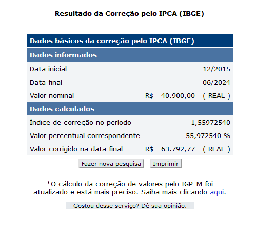

Plano de custos
1. Introdução
Um plano de custos é uma ferramenta essencial para o planejamento financeiro de qualquer projeto ou empreendimento. Ele envolve a estimativa detalhada de todas as despesas necessárias para alcançar os objetivos propostos, desde custos diretos, como materiais e mão de obra, até custos indiretos, como aluguel e utilidades. Ao elaborar um plano de custos, é possível prever e controlar os gastos, garantir a alocação eficiente dos recursos e assegurar a viabilidade financeira do projeto, facilitando a tomada de decisões estratégicas e a minimização de riscos financeiros.
2. Estimativa de custos
Para calcular a estimativa de custo total do projeto, o cálculo foi separado em pessoas, equipamentos, ferramentas, capacitação e infraestrutura.
2.1. Recursos humanos
Foi utilizado o custo médio anual por aluno de instituto federal. De acordo com o Jornal da UNESP, no ano de 2015, esse custo era de R$40.900 anual por aluno.
É necessário adaptar os dados à inflação atual, ano 2024. Após aplicar essa correção utilizando a calculadora de inflação do IBGE, utilizando o índice de IPCA, com data inicial de 12/2015 e final 06/2024, o valor passa a ser R$ 63.792,77 anual.

Além disso, essa estimativa leva em consideração o curso da equipe, Engenharia de Software, que é um curso de 5 anos, de 232 créditos. Considerando também as 8 semanas de projeto e os 11 integrantes da equipe, temos os seguintes cálculos:
-
Custo médio por crédito: custo médio anual por integrante x quantidade padrão de anos de curso ÷ quantidade de créditos para formação no curso
R$ 63.792,77 x 5 ÷ 232 = R$ 1.374,84 -
Custo médio por integrante na disciplina de EPS/MDS: custo médio por crédito x quantidade de créditos da disciplina e extraclasse
R$ 1.374,84 x 4 = R$ 5.499,38 -
Custo médio semanal por integrante: custo por integrante ÷ quantidade de semanas do projeto
R$ 5.499,38 ÷ 17 = R$ 323,49
2.2. Equipamentos
Para estimar os custos com equipamentos, que não são recorrentes, consideramos o preço de um notebook com configurações mínimas. De acordo com os sites de venda, o preço de um notebook é de aproximadamente R$ 3.400,00. Levando em conta os 11 integrantes da equipe:
- Custo TOTAL dos equipamentos: custo médio do notebook x quantidade de integrantes da equipe
3400 x 11 = R$ 37.400,00
2.3. Ferramentas
Sem custos.
2.4. Capacitação
Sem custos.
2.5. Infraestrutura
A estimativa de custos de infraestrutura levou em consideração o uso de energia elétrica e internet.
2.5.1. Internet
Para cálculo do custo de internet utilizaremos um plano de R$ 90,00 por mês.
- Custo semanal de internet por integrante: custo mensal da internet ÷ quantidade de semanas no mês
90 ÷ 4 = R$ 22,50
2.5.2. Energia
Para a estimativa de energia, seguiu-se os dados da tabela de tarifas da neoenergiabrasilia, com os dados vigentes de 2024. Segundo essa tabela, o custo do KW/h residencial, consumo ativo, de Brasília é cerca de R$ 0,7662. Vamos utilizar o consumo especificado em um dos equipamentos.
- Custo semanal de energia por integrante: horas de trabalho x consumo do notebook x tarifa
12 x 2,00 x 0,77 = R$ 1,53
2.5.3. Custo TOTAL em infraestrutura
Somando as estimativas de custo semanal de internet (R$ 22,50) e energia (R$ 1,53) por integrante, têm-se um custo semanal de infraestrutura de R$ 264,36 por integrante.
3. Planilha de custos
Nota:
1 - Semana 12 houve a saída oficialmente de um integrante da equipe.
2 - Semana 13 houve adição de dois integrantes na equipe.
Referências
Equipe DNIT 2023-2. Plano de custos. Disponível em https://fga-eps-mds.github.io/2023.2-Dnit-DOC/plano-monitoramento/plano-custos/
Equipe Alectrion 2023-1. Plano de custos. Disponível em: https://fga-eps-mds.github.io/2023-1-Alectrion-DOC/plano-custos/
Neoenergia Brasília. Tarifas. Disponível em: https://www.neoenergia.com/web/brasilia/sua-casa/composicao-tarifaria
Ministério Público do Estado de Goiás] https://www.mpgo.mp.br/portal/conteudo/dicas-para-economia-de-energia-ao-usar-o-computador#:~:text=Um%20computador%20ligado%20durante%201,5%2C0%20kwh%2Fm%C3%AAs.
Versionamento
| Data | Descrição | Autore(es) |
|---|---|---|
| 19/07/2024 | Criação do documento | Guilherme |
| 03/08/2024 | Revisão do documento | Guilherme |